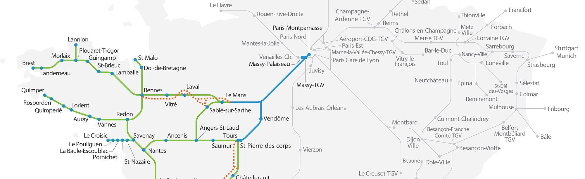
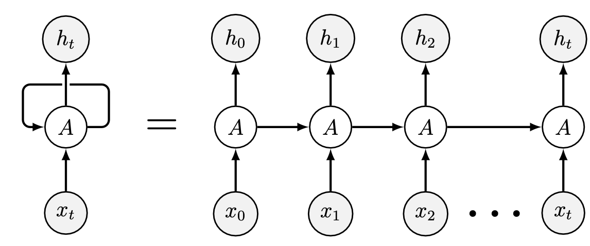
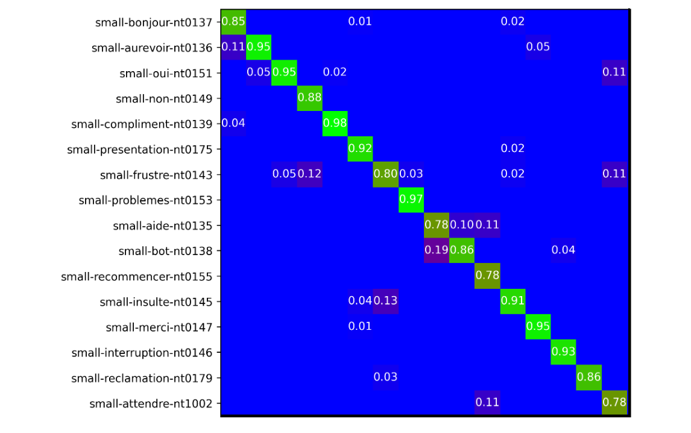
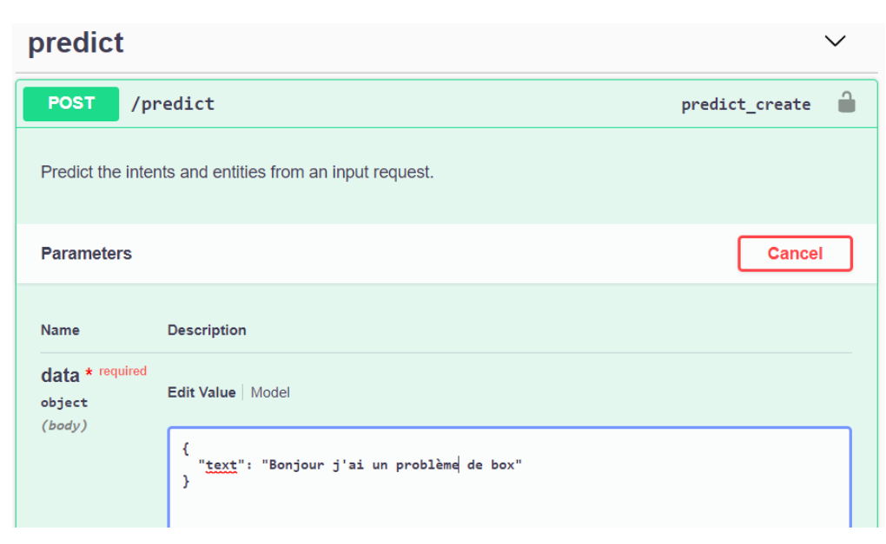

Chatbots

A chatbot is a program that can communicate in natural language with an individual. With the advent of artificial intelligence, these assistants are becoming more and more powerful and present in the digital landscape. I have developed several chatbots, using different technologies but also in different sectors.
Transport chatbot
The first chatbot I worked on was for a major railroad company during my internship at IBM. The project had already been running for several years and the goal of the internship was to take into account non-station addresses in the chatbot. This was done using APIs. This experience was my first contact with AI, indeed the chatbots were developed via IBM Watson, a platform allowing access to several AI services. One of the key concepts that I also retained and that I used later is that the intelligence of a chatbot does not only depend on its conversational capacity but also on the external knowledge it has.
Medical chatbot
The rapid development of new technologies has created a rupture, especially with people with chronic pathologies that require extensive monitoring or the elderly. Chatbots try to answer several problems concerning these people, such as personalized medical follow-up, communication and transmission of test results, information dissemination, or even advice or pre-diagnosis. Their main advantage is to present an interface allowing intuitive interactions, imitating human behavior.
Adapting your diet to your health
- Taking certain medications requires following a very specific diet in parallel
- We have therefore developed a chatbot to which we communicate medical prescriptions and which will then suggest daily foods containing the nutritional contributions that will allow for better treatment results
- This chatbot is developed under Rasa, a framework for developing chatbots under Python. Rasa allows for a chatbot based on response rules and good database management
- This chatbot searches two databases: one containing the recommended nutritional intake for a certain drug, and another allowing to convert these intakes into equivalent food
Help for people with Alzheimer's disease
- People with Alzheimer's disease may forget to perform simple everyday actions
- There are different levels of severity of the disease, ranging from occasional forgetfulness to the disease making independent living nearly impossible
- The goal of this chatbot is therefore to accompany patients on a daily basis by reminding them of everyday tasks while taking into account the diagnosis of the severity of the disease
- This chatbot was developed via Dialogflow, a tool that integrates machine learning methods for understanding and was deployed on Facebook
- Thanks to the chatbot patients will be able to schedule reminders for their appointments, for example, as well as view videos explaining how to perform certain tasks
Customer relations
The advantage of chatbots is that they provide a sense of closeness to the customer because you can communicate with them as if you were talking to a human, and above all they reduce the costs associated with calls to customer service advisors. To ensure an optimal customer experience, these conversational agents can access the customer's information in the same way as a customer service representative and are configured to ask the most relevant questions possible to enable problem resolution.
For the past few years, telecom companies have been developing increasingly intelligent conversational agents, integrating both the knowledge provided by their designers and the customer information they have at their disposal, but also thanks to the understanding of natural language, which allows them to deliver relevant and accurate content. Until now, they have relied on external conversational agent development services such as those from IBM and SAP. However, with the increase in conversation volumes, the costs of these services are becoming problematic, especially since their performance in terms of both response time and relevance is starting to deteriorate. It became necessary to develop an internal NLP solution to replace all or part of the calls to external services.
Development of the machine learning model
I decided to use Bert's embedding since there is a pre-trained model for French comprehension: CamemBert. Indeed it is very expensive to train such a complex language model (110 millions parameters) from the basic model. This forced us to switch to the Python language in which CamemBert is implemented.
I then developed the evaluation functions. This step is essential in order not to obtain a biased algorithm for example. In addition, apart from the classical metrics such as accuracy, we compute the Matthews correlation coefficient which allows to measure the quality of the classification or the F1 score. The advantage of these indicators is that they are less sensitive to class imbalances than accuracy. In addition, we display confusion matrices in order to visualize which classes were misclassified.
Since it is a 161*161 matrix it is rather complicated to read its content here, nevertheless we can clearly observe that the diagonal presents classification percentages much higher than the rest of the matrix which shows that the algorithm performs overall good predictions. We can also zoom in on the "small talk" to better understand what is going on.
First, we notice that all classes have detection accuracies higher than what was expected, i.e. 72%. And in general, the results are on average better than those of SAP and IBM, so it is time to make the service available via an API.
Setting up the API and deployment
I chose to use Django REST Framework to develop this service. It is a Python framework (development environment) allowing to build web services exposing APIs.
DRF allows both the management of HTTP calls but it also simplifies the management of the database because it integrates an ORM (object-relational mapping) to interface it, and facilitates the management of users and IPs authorized to call the service. This framework also integrates Swagger which allows to document and use the API in a simple way.
In order to obtain a solution that integrates perfectly with the back-end and that can be part of an advanced CI/CD (continuous integration/continuous development) process, I also deployed the solution on Red Hat Openshift, which is a particular implementation of Kubernetes.